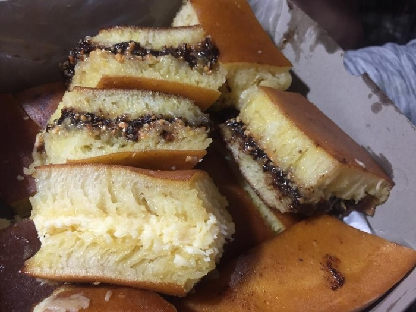

  
<table width="100%"> <!-- table pembuka -->
	<tr> <!-- pembuata table row -->
		<td width="80%" valign="top"> <!-- Membuat lebar kolom 1 80% dan vertial position top -->
			<p> <!-- tag paragraf -->
				<b>Bahan</b> <!-- tag bold -->
			</p><!-- penutup paragraf -->
			<ol> <!-- order list -->
				<li>125 Gram tepung terigu</li> <!-- list -->
				<li>50 Gram gula pasir</li> <!-- list -->
				<li>1/4 boking powder</li> <!-- list -->
				<li>1 rags instant</li> <!-- list -->
				<li>175 ml Air</li> <!-- list -->
				<li>2 butir telur</li> <!-- list -->
			</ol> <!-- penutup order list -->
			<p><!-- tag paragraf -->
				<b>Taburan Isi</b> <!-- tag bold -->
			</p><!-- penutup paragraf -->
			<ol> <!-- order list -->
				<li>Gula Pasir</li>  <!-- list -->
				<li>Susu kental Manis</li>  <!-- list -->
				<li>Keju, Mesis, Kacang, dll</li>  <!-- list -->
			</ol> <!-- penutup order list -->
			<p><!-- tag paragraf -->
				<b>Cara Membuat</b> <!-- tag bold -->
			</p><!-- penutup paragraf -->
			<ol> <!-- order list -->
				<li>Kocok tepung terigu, setengah gula pasir (25 gram) dan baking powder dengan air sampai lembut. <br>Masukan ragi instan dan diamkan minimal selama 1 jam</li> <!-- list -->
				<li>Kocok telur dengan sisa gula pasir hingga rata. masukan kedalam tepung, aduk rata.</li>   <!-- list -->
				<li>Panaskan cetakan martabak dengan api kecil dan oleskan dengan minyak. tuangkan adonan kedalamnya biarkan hingga adonan mengeluarkan buih dan berpori, taburkan gula pasir lalu tutup hingga matang. angkat.</li> <!-- list -->
				<li>Oles martabak dengan margarin dan taburkan meses, keju, kacang kemudian tuangi dengan susu kental manis. Belah menjadi dua bagian lipat membentuk setengah lingkaran. <br>
				Potong-potong martabak sebelum dihidangkan</li> <!-- list -->
			</ol> <!-- penutup order list -->
			<p><!-- tag paragraf -->
				Menu Sebelumnya 
				<a href="google-maps.html" target="isi"> <!-- tag hyperlink yang akan ditampilkan pada name isi di frame -->
					Klik
				</a> <!-- penutup tag hyperlink -->
			</p><!-- penutup paragraf -->
		</td><!-- penutup text data -->
		<td width="20%" valign="top"> <!-- Membuat lebar kolom 1 80% dan vertial position top -->
			
		</td><!-- penutup text data -->
	</tr> <!-- table row -->
</table> <!-- penutup table -->
